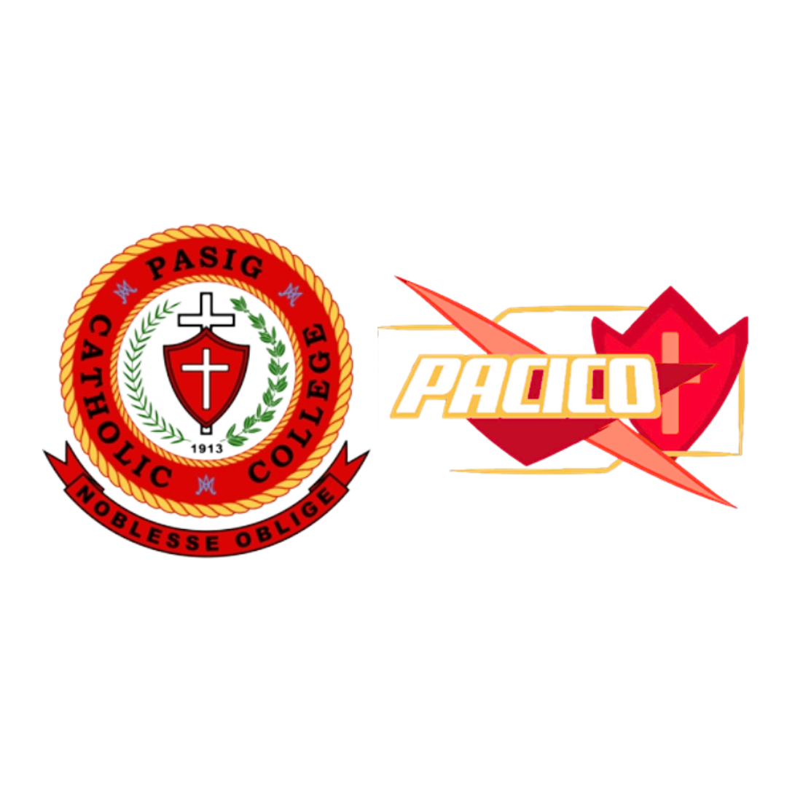

<!DOCTYPE html>
<html lang="en">
<head>
    <meta charset="UTF-8">
    <meta name="viewport" content="width=device-width, initial scale=1.0">
    <title>PACICO</title>
    <link rel="stylesheet" href="style.css">
    <link rel="stylesheet" href="https://fonts.googleapis.com/css2?family=Material+Symbols+Outlined:opsz,wght,FILL,GRAD@20..48,100..700,0..1,-50..200" />
    <script src="https://kit.fontawesome.com/5a6c44833b.js" crossorigin="anonymous"></script>
</head>
</html>
<body>
    <header id="navbar">
        <a href="#home" class="logo"></a>
        <ul class="navlist" id="menu">
            <li><a href="#home" class="active">Home</a></li>
            <li><a href="#about">About</a></li>
            <li><a href="#contacts">Contacts</a></li>
        </ul>
    </header>

    <section class="homepage" id="home">
        
        
        
        <div class="home-content">
            <h1 id="greeting">Welcome!</h1>
            <p>For people dissatisfied on the manual ways of <br>customer service, PACICO right here helps you<br>overcome that in many levels.
                It is a little bit<br>innovative and offers swift and tailored<br>problem-solving, ensuring a superior<br>customer experience
               and signficant time and cost<br>savings.
            </p>
        </div>
        <a href="#about" id="btn">Learn More</a>
    </section>

    <section class="info" id="about">
        
        
        
        <h2>About Our Website</h2>
        <p id="value-prop"> The website features a chatbot called PACICO,<br>which is derived from the acronym of Pasig Catholic College,<br>meaning "Personal Assistant Companion for Interaction,<br>Counseling and Operation." 
            The chatbot ensures data safety and serves as a<br>help center for guests and students with concerns about the school system.<br>The project aims to enhance the institution's technological<br>influence and use, with automatic functions 
            and fast processes for<br>delivering messages. Inspired by chatbot inventions like<br>SimSimi, Voiceflow, ChatGPT and Facebook Messenger chatbots,<br> 
            PACICO is an actual friend for all PCCians,<br>providing protection and responsiveness. <br><br>
            To try the chatbot, click the icon in the bottom right corner.
        </p>
    </section>

    <section class="perks">
        <h2>Perks</h2>
        <p>We do our best in order to reach these goals for better response system in chatbot usage.</p>
         <div class="work-info">
            <div class="work-data">
            <span class="material-symbols-outlined" id="dynamic">dynamic_form</span>
            <h2 id="first-info">Fast and Responsive<br>depending on the Network</h2>
            </div>
            <div class="work-data">
            <span class="material-symbols-outlined" id="query">query_stats</span>
            <h2 id="second-info">Accurate Information</h2>
            </div>
            <div class="work-data">
            <span class="material-symbols-outlined" id="money">money_off</span>
            <h2 id="third-info">Free to Use</h2>
            </div>
            <div class="work-data">
            <span class="material-symbols-outlined" id="ar">ar_on_you</span>
            <h2 id="fourth-info">Interactive and Integrative</h2>
            </div>
         </div>
         <br>
         <br>
         <br>
         <br>
         <br>
    </section>
    
    <section class="contacts" id="contacts">
        <h2>Contact Us</h2>
        <div class="contact-info">
            <div class="contact-data">
            <span class="material-symbols-outlined">call</span>
            <h3>0123-456-7890</h3>
            </div>
            <div class="contact-data">
            <span class="material-symbols-outlined">mail</span>
            <h3>pacico@pcc.edu.ph</h3>
            </div>
            <div class="contact-data">
            <span class="material-symbols-outlined">pin_drop</span>
            <h3>Justice Ramon, <br>R. Jabson Street,<br>Pasig, Metro Manila</h3>
            </div>
        </div>
        <a href="#"><i class="fa-brands fa-facebook"></i></a>
        <a href="#"><i class="fa-brands fa-instagram"></i></a>
        <a href="#"><i class="fa-brands fa-square-x-twitter"></i></a>
        
        <iframe src="https://www.google.com/maps/embed?pb=!1m18!1m12!1m3!1d965.4199466503624!2d121.07623867327696!3d14.560295227961022!2m3!1f0!2f0!3f0!3m2!1i1024!2i768!4f13.1!3m3!1m2!1s0x3397c87f24b30353%3A0xe23c5dcee145d66f!2sPasig%20Catholic%20College!5e0!3m2!1sen!2sph!4v1701877795824!5m2!1sen!2sph" width="600" height="450" style="border:0;" allowfullscreen="" loading="lazy" referrerpolicy="no-referrer-when-downgrade"></iframe>
    </section>

    <script type="text/javascript">
        (function(d, t) {
            var v = d.createElement(t), s = d.getElementsByTagName(t)[0];
            v.onload = function() {
              window.voiceflow.chat.load({
                verify: { projectID: '6558156463d2b3000791e7cb' },
                url: 'https://general-runtime.voiceflow.com',
                versionID: 'production'
              });
            }
            v.src = "https://cdn.voiceflow.com/widget/bundle.mjs"; v.type = "text/javascript"; s.parentNode.insertBefore(v, s);
        })(document, 'script');
      </script>